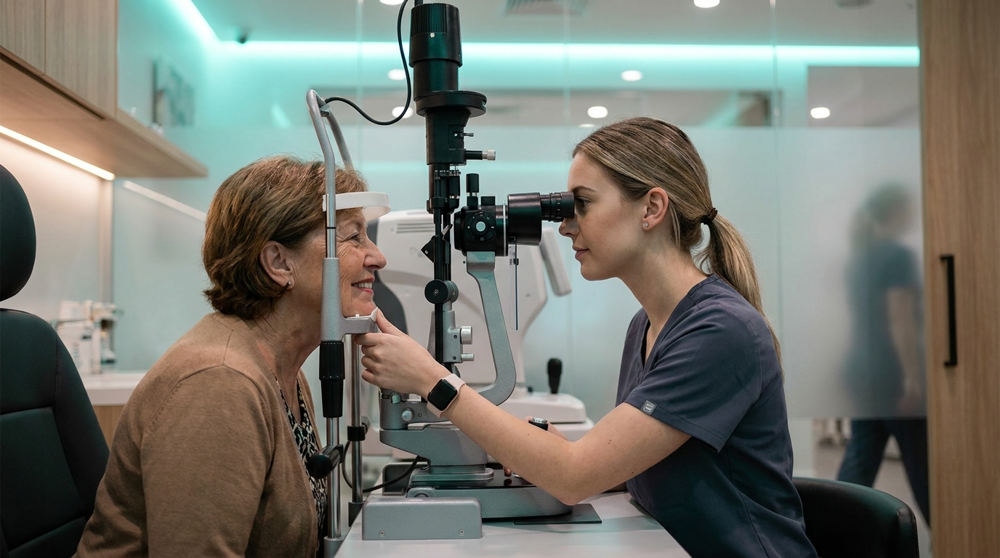

SNEC EyeBot is an AI learning companion that transforms a clinical curriculum into three evidence-based experiences — a Socratic tutor, inexhaustible virtual-patient simulations, and a self-optimising memory engine — woven into one adaptive loop. Grounded today in SNEC’s clinical curriculum and architected to serve the full spectrum of eye-care learners, it also gives educators a live, cohort-wide view of mastery for the first time. The platform is built, demonstrable, and ready to pilot.

Across the eye-care continuum — medical students on rotation, optometry students, ophthalmology residents, nurses and allied-health technicians — training is rigorous, yet it meets four structural limits that no amount of dedication can fully solve.
One educator cannot give every trainee unlimited one-to-one tutoring or on-demand case practice.
Which conditions a trainee actually meets is left to the luck of the clinical roster.
Without deliberate reinforcement, much of what is taught is forgotten within weeks of the lesson.
Educators often discover weaknesses at assessment time — when it is already late to intervene.
Plain-language questions met with Explanation → Mechanism → Clinical Pearl → a check for understanding, always grounded in the clinical knowledge base.
Interview a virtual patient, order investigations, commit to a diagnosis and plan — graded on a four-domain rubric out of 40 with instant feedback.
High-yield cards auto-generated from each session and every missed clinical point, scheduled by the SM-2 algorithm for durable recall.
…and quietly, an analytics layer watches the whole cohort — turning individual practice into institutional insight.
EyeBot is not a chatbot bolted onto a syllabus. Five deliberate advances make it genuinely new for clinical education.
Answers are retrieved from the institution’s own validated material — faithful and auditable, never the untraceable guesswork of a generic model.
The AI plays both patient and examiner: unlimited, standardised case exposure with rubric-graded feedback — independent of roster luck.
Each learner’s weak points automatically become their next flashcards and tougher cases — genuine personalisation, at scale.
A Workflows–Agents–Tools design separates AI judgement from deterministic execution — trustworthy enough for clinical training.
Learning analytics purpose-built for clinical education: at-risk detection, retention scoring and learning-velocity — live, not at term’s end.
Every design decision in EyeBot maps to an established principle of how clinicians actually learn and retain.
SM-2 spaced repetition fights the forgetting curve — each review lengthens durable retention.
The tutor explains mechanism, then checks understanding — active recall over passive reading.
Simulations rehearse the full clinical chain: history, investigation, diagnosis, management.
Rubric scores and targeted cards turn every mistake into the learner’s next rep.
EyeBot adapts its content, cases and rubric to each role — and the same engine extends across specialties and institutions. What begins with SNEC’s programme scales to the whole of ophthalmic education.
Eye-rotation foundations
Refraction & primary care
Clinical decision-making
Peri-operative & patient care
Technical & assisting skills
Content, case libraries and rubrics tuned to each learner’s scope of practice.
The same engine accepts new curricula — glaucoma, retina, paediatrics and beyond.
PDPA-compliant consent, bcrypt credentials and role-based access — privacy by design.
A representative intake of ophthalmic trainees over an 8–12 week module, benchmarked against a prior cohort as historical control.
Pre/post knowledge test · case-rubric progression · flashcard retention · engagement (active days & streaks) · educator time saved · learner satisfaction.
Baseline → guided daily use → measured uplift, with the analytics layer capturing evidence automatically throughout.
| Attribute | How EyeBot delivers |
|---|---|
| Educational soundnesspedagogy | Curriculum-grounded; SM-2 spacing; Socratic + case-based design rooted in learning science. |
| Effectivenessoutcomes | Closes gaps in a measured loop; analytics quantify uplift at learner and cohort level. |
| User experienceengagement | Polished, gamified and mobile-friendly, with daily check-ins that build habit. |
| Significanceimpact | First AI companion spanning the ophthalmic learning continuum; scalable across SingHealth. |
Run with a live intake; capture the outcome evidence.
Extend across every eye-care learner type.
New curricula, richer simulation media, UI refresh.
Other institutions on the same engine.